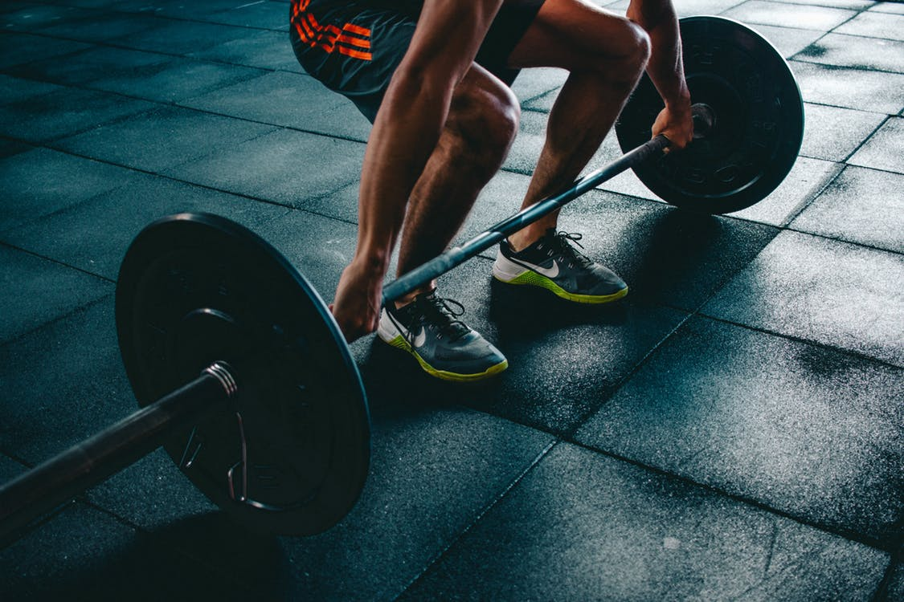

Penkkipunnerrus on yksi parhaimmista yläkropan massaliikkeistä ja todella hyvä kehittämään yläkropan voimaa, vaikka tosin moni kyseenalaistaa liikkeen soveltuvuuden tavalliseen elämään. Liike kuitenkin kehittää rintalihaksia erinomaisesti ja ojentajia, osittain myös selkää, sekä jalkoja oikein tehtynä. Penkkiin makuulleen mentäessa on tärkeää, että tanko on sopivalla etäisyydellä ja painon nostaminen räkistä tapahtuisi enemmän selällä kuin käsillä ja painon tuominen rintalihasten alaosan kohdalle ei rasittaisi olkapäitä. Sopiva oteleveys tangosta riippuu omista mitoista, mutta leveämmällä otteella saa enemmän tuntumaa rintaan ja kapeammalla otteella liike ottaa enemmän ojentajalihaksiin. Tässä liikkeessä on todella tärkeää tuoda lapaluut yhteen ennen kuin lähtee nostamaan rautaa senttiäkään. Vatsa on otettava myös täyteen happia, jonka jälkeen käsillä ja selällä voidaan tuoda paino suorille käsille rinnan päälle. Painoa, kun lähdetään laskemaan rinnalle niin on tärkeää samalla pitää jalat tukevasti maassa ja työntää niillä mahdollisimman paljon. Tanko ei myöskään liiku täysin suorassa linjassa vaan hieman kaltevasti. Todella tärkeää on myös huomioida, että kyynärpäiden linja on noin 45 astetta, eikä osoita esimerkiksi suoraan sivuille, koska etuolkapäät ovat loukkaantumisvaarassa tällöin. Kun, tanko koskettaa rintaa, työnnetään tanko takaisin ylös. Ylhäällä taas uudestaan happea ja tehdään uusi toisto. txt txt txt txt txt txt txt txt txt txt txt txt txt txt txt txt txt txt txt txt txt txt txt txt txt txt txt txt txt txt txt txt txt txt txt txt txt txt txt txt txt txt txt txt txt txt txt txt txt txt txt txt txt txt txt txt txt txt txt txt txt txt txt txt txt txt txt txt txt txt txt txt txt txt txt txt txt txt txt txt txt txt txt txt txt txt txt txt txt txt txt txt txt txt txt txt txt txt txt txt txt txt txt txt txt txt txt txt txt txt txt txt txt txt txt txt txt txt txt txt txt txt txt txt txt txt txt txt txt txt txt txt txt txt txt txt txt txt txt txt txt txt txt txt txt txt txt txt txt txt txt txt txt txt txt txt txt txt txt txt txt txt txt txt txt txt txt txt txt txt txt txt txt txt txt txt txt txt txt txt txt txt txt txt txt txt txt txt txt txt txt txt txt txt txt txt txt txt txt txt txt txt txt txt txt txt txt txt txt txt txt txt txt txt txt txt txt txt txt txt txt txt txt txt txt txt txt txt txt txt txt txt txt txt txt txt txt txt txt txt txt txt txt txt txt txt txt txt txt txt txt txt txt txt txt txt txt txt txt txt txt txt txt txt txt txt txt txt txt txt txt txt txt txt txt txt txt txt txt txt txt txt txt txt txt txt txt txt txt txt txt txt txt txt txt txt txt txt txt txt txt txt txt txt txt txt txt txt txt txt txt txt txt txt txt txt txt txt txt txt txt txt txt txt txt txt txt txt txt txt txt txt txt txt txt txt txt txt txt txt txt txt txt txt txt txt txt txt txt txt txt txt txt txt txt txt txt txt txt txt txt txt txt txt txt txt txt txt txt txt txt txt txt txt txt txt txt txt txt txt txt txt txt txt txt txt txt txt txt txt txt txt txt txt txt txt txt txt txt txt txt txt txt txt txt txt txt txt txt txt txt txt txt txt txt txt txt txt txt txt txt txt txt txt txt txt txt txt txt txt txt txt txt txt txt txt txt txt txt txt txt txt txt txt txt txt txt txt txt txt txt txt txt txt txt txt txt txt txt txt txt txt txt txt txt txt txt txt txt txt txt txt txt txt txt txt txt txt txt txt txt txt txt txt txt txt txt txt txt txt txt txt txt txt txt txt txt txt txt txt txt txt txt txt txt txt txt txt txt txt txt txt txt txt txt txt txt txt txt txt txt txt txt txt txt txt txt txt txt txt txt txt txt txt txt txt txt txt txt txt txt txt txt txt txt txt txt txt txt txt txt txt txt txt txt txt txt txt txt txt txt txt txt txt txt txt txt txt txt txt txt txt txt txt txt txt txt txt txt txt txt txt txt txt txt txt txt txt txt txt txt txt txt txt txt txt txt txt txt txt txt txt txt txt txt txt txt txt txt txt txt txt txt txt txt txt txt txt txt txt txt txt txt txt txt txt txt txt txt txt txt txt txt txt txt txt txt txt txt txt txt txt txt txt txt txt txt txt txt txt txt txt txt txt txt txt txt txt txt txt txt txt txt txt txt txt txt txt txt txt txt txt txt txt txt txt txt txt txt txt txt txt txt txt txt txt txt txt txt txt txt txt txt txt txt txt txt txt txt txt txt txt txt txt txt txt txt txt txt txt txt txt txt txt txt txt txt txt txt txt txt txt txt txt txt txt txt txt txt txt txt txt txt txt txt txt txt txt txt txt txt txt txt txt txt txt txt txt txt txt txt txt txt txt txt txt txt txt txt txt txt txt txt txt txt txt txt txt txt txt txt txt txt txt txt txt txt txt txt txt txt txt txt txt txt txt txt txt txt txt txt txt txt txt txt txt txt txt txt txt txt txt txt txt txt txt txt txt txt txt txt txt txt txt txt txt txt txt txt txt txt txt txt txt txt txt txt txt txt txt txt txt txt txt txt txt txt txt txt txt txt txt txt txt txt txt txt txt txt txt txt txt txt txt txt txt txt txt txt txt txt txt txt txt txt txt txt txt txt txt txt txt txt txt txt txt txt txt txt txt txt txt txt txt txt txt txt txt txt txt txt txt txt txt txt txt txt txt txt txt txt txt txt txt txt txt txt txt txt txt txt txt txt txt txt txt txt txt txt txt txt txt txt txt txt txt txt txt txt txt txt txt txt txt txt txt txt txt txt txt txt txt txt txt txt txt txt txt txt txt txt txt txt txt txt txt txt txt txt txt txt txt txt txt txt txt txt txt txt txt txt txt txt txt txt txt txt txt txt txt txt txt txt txt txt txt txt txt txt txt txt txt txt txt txt txt txt txt txt txt txt txt txt txt txt txt txt txt txt txt txt txt txt txt txt txt txt txt txt txt txt txt txt txt txt txt txt txt txt txt txt txt txt txt txt txt txt txt txt txt txt txt txt txt txt txt txt txt txt txt txt txt txt txt txt txt txt txt txt txt txt txt txt txt txt txt txt txt txt txt txt txt txt txt txt txt txt txt txt txt txt txt txt txt txt txt txt txt txt txt txt txt txt txt txt txt txt txt txt txt txt txt txt txt txt txt txt txt txt txt txt txt txt txt txt txt txt txt txt txt txt txt txt txt txt txt txt txt txt txt txt txt txt txt txt txt txt txt txt txt txt txt txt txt txt txt txt txt txt txt txt txt txt txt txt txt txt txt txt txt txt txt txt txt txt txt txt txt txt txt txt txt txt txt txt txt txt txt txt txt txt txt txt txt txt txt txt txt txt txt txt txt txt txt txt txt txt txt txt txt txt txt txt txt txt txt txt txt txt txt txt txt txt txt txt txt txt txt txt txt txt txt txt txt txt txt txt txt txt txt txt txt txt txt txt txt txt txt txt txt txt txt txt txt txt txt txt txt txt txt txt txt txt txt txt txt txt txt txt txt txt txt txt txt txt txt txt txt txt txt txt txt txt txt txt txt txt txt txt txt txt txt txt txt txt txt txt txt txt txt txt txt txt txt txt txt txt txt txt txt txt txt txt txt txt txt txt txt txt txt txt txt txt txt txt txt txt txt txt txt txt txt txt txt txt txt txt txt txt txt txt txt txt txt txt txt txt txt txt txt txt txt txt txt txt txt txt txt txt txt txt txt txt txt txt txt txt txt txt txt txt txt txt txt txt txt txt txt txt txt txt txt txt txt txt txt txt txt txt txt txt txt txt txt txt txt txt txt txt txt txt txt txt txt txt txt txt txt txt txt txt txt txt txt txt txt txt txt txt txt txt txt txt txt txt txt txt txt txt txt txt txt txt txt txt txt txt txt txt txt txt txt txt txt txt txt txt txt txt txt txt txt txt txt txt txt txt txt txt txt txt txt txt txt txt txt txt txt txt txt txt txt txt txt txt txt txt txt txt txt txt txt txt txt txt txt txt txt txt txt txt txt txt txt txt txt txt txt txt txt txt txt txt txt txt txt txt txt txt txt txt txt txt txt txt txt txt txt txt txt txt txt txt txt txt txt txt txt txt txt
